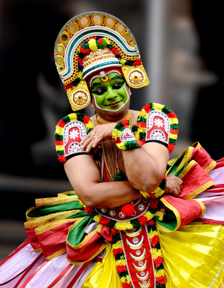

OTTAMTHULLAL

Ottan Thullal (or Ottamthullal is a recite-and-dance art-form of Kerala, India. It was introduced in the eighteenth century by Kunchan Nambiar, one of the Prachina Kavithrayam (three famous Malayalam-language poets). The folksy performance, often laced with humour intended at criticism of society, is accompanied by a mridangam (a barrel-shaped double-headed drum) and/or the handy idakka besides a pair of ilathalam cymbals.